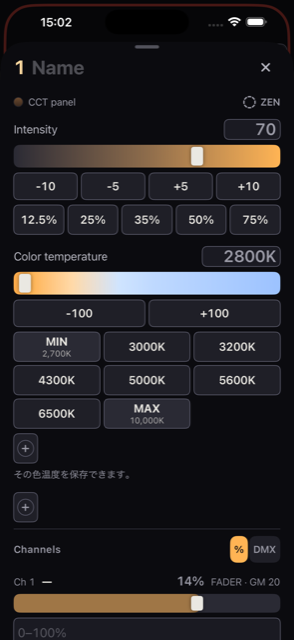

12345678
12345678- 1 送信方式と接続状態
- 2 全体マスター(GM)
- 3 機種・グループの切り替え
- 4 ページの移動
- 5 灯体の丸いアイコン
- 6 フェーダー
- 7 番号ボタン
- 8 5 つのタブ
iPhone を照明卓にするアプリ。2026-09-12 版。画面の言葉は英語のまま書いてあります。
iPhone で照明を操作するアプリ、kanau の使い方を説明します。画面に表示されるボタン名や項目名は、英語表記のまま記載しています。
対象: iPhone 版 kanau。2026 年 9 月 12 日の公開マニュアルをもとに、0.2 build 233 で一部の画面と操作を確認しています。バージョンにより、表示や機能が異なる場合があります。
保存データがない端末では、24 台のデモ用灯体が表示されます。デモは GM が 20 に設定されています。必要に応じて画面上部の GM → →100 で全体マスターを戻してください。実際の灯体を登録する場合は、Settings → SHOWS → NEW SHOW で新しいショーを作成できます。
先に知っておきたい操作: 灯体の Lock は B.O.(暗転)より優先されます。また、呼び出したシーンは、その後の操作で自動更新されます。詳しくは 08 章と 10 章を参照してください。
↑ 目次へ12345678Home が基本の操作画面です。ほかのタブをタップすると、Home の上に操作パネルが開きます。上端のハンドルを下へドラッグするか、Done で閉じると Home に戻ります。
| タブ | 用途 | 参照 |
|---|---|---|
| Scenes | 明かりをシーンとして保存・呼び出し | 08 章 |
| Patch | 灯体、アドレス、モード、グループの設定 | 03 章 |
| Home | フェーダーによる明るさの操作 | 04 章 |
| Effects | エフェクトの一覧、調整、停止 | 09 章 |
| Settings | DMX 出力、ショー、MIDI、セッション、端末の設定 | 02・11〜13 章 |
左側には送信方式と接続状態が表示されます。ARTNET は Art-Net、SACN は sACN、BLUETOOTH は Bluetooth のみで送信している状態です。
| 表示 | 意味 |
|---|---|
| 緑の丸 | 送信中 |
| 琥珀色の丸 | 送信頻度が低下している、または再接続中(Reconnecting…) |
| 赤い丸・No node | 応答するノードが見つからない |
| 赤い丸・Blocked | iOS により送信が制限されている |
| 灰色の丸・idle | 送信停止中 |
| WAITING と IP アドレス | 別の卓を検出したため、この端末は送信を待機している |
| SHARED と IP アドレス | 別の卓も同じユニバースを送信している。この端末も送信を継続中 |
| JOINED とホスト名 | セッションに参加中。DMX はホストから送信する |
送信中の表示は、灯体への到達を保証するものではありません。接続の確認方法は 02 章、症状別の対処は 14 章を参照してください。
中央と右側には、次の表示・ボタンがあります。
| 表示・ボタン | タップ | 長押し・補足 |
|---|---|---|
| GM 100 | 全体マスターの操作パネルを開く | 長押しで設定を開く。100 未満では赤く点滅 |
| B.O. | 暗転を解除する | 暗転中は GM に代わって表示 |
| 🔌 n(赤) | 操作なし | 出力をオフにしたユニバース数。Settings → OUTPUT で戻す |
| 🔒 n(緑) | 操作なし | 暗転中も点灯しているロック済み灯体の数 |
| BATTERY SAVE | 有効・無効を切り替える | 長押しで減光率とフェード時間を設定 |
| SCREEN LOCK | ロックはかからない | 0.5 秒長押しで画面をロック |
| 項目 | 使い方 |
|---|---|
| Fixtures／Groups | 機種別表示とグループ別表示を切り替える |
| 10／5 | 1 ページのフェーダー数を切り替える。5 本表示では操作部分が太くなる |
| HISTORY | 過去の操作状態の一覧を開く |
| 機種・グループのボタン | タップすると、その灯体を Home に表示。長押しでまとめて色と明るさを調整 |
| CLEAR n | 灯体の選択を解除する。明かりは変わらない |
| ‹／› | 前後のページへ移動する |
| 数値 | 明るさを 0〜100 で表示。操作中は画面上部にも大きく表示 |
| 灯体の丸いアイコン(…) | タップで選択・解除。0.45 秒長押しで灯体の操作パネルを開く |
| フェーダー | 上下のドラッグで明るさを調整 |
| 機種名 | 同じ機種・モードが続く範囲を表示 |
| 番号ボタン | 灯体番号を表示。ピアノ操作では、押している間だけ明るさを変える |
| ⏻ | 設定値を保持したまま、出力をオン・オフにする |
| COLOR | 選択した灯体の色と明るさを調整する |
| EFFECT | 選択した灯体にエフェクトを適用する |
| PIXELS | ピクセル灯体のセルを展開・折りたたみ |
| ＋ − | ピアノ操作を LOCK → ＋ → − の順に切り替える |
| FINE | 通常 → FINE(1/10)→ FINE+(1/100)の順に感度を切り替える |
COLOR は灯体を選択していないときや、選択した灯体に色の機能がないときは使えません。EFFECT は未選択時、PIXELS は表示中の灯体にピクセル機能がないときに無効になります。
| 色・印 | 意味 |
|---|---|
| 琥珀色 | 選択中、または有効な操作 |
| 赤 | 暗転、GM の低下、通信の問題、ピアノ操作など、確認が必要な状態 |
| 緑 | 送信中、灯体の Lock、BATTERY SAVE 有効 |
| 紫 | 灯体の出力オフ、画面ロック |
| シアン | セッションの別端末による操作 |
| 橙色 | 上限・下限への到達 |
| 灰色 | 無効、または停止中 |
灯体の丸いアイコンは色と実際の出力を表します。選択中は琥珀色の縁、出力オフは紫の輪と ⏻、ロック中は緑の外輪と 🔒 が付きます。エフェクト実行中は、その動きに合わせて表示が変化します。
画面の外周が赤く点滅している場合は、GM が 100 未満です。BATTERY SAVE 中は緑の枠が表示されます。両方が有効な場合は外側が赤、内側が緑になります。暗転中は赤い枠の代わりに B.O. が表示されます。
初回起動時のデモには、Generic の DIMMER／CCT／RGB／RGBW／BAR(4 ピクセル)が合計 24 台登録されています。KEY、BACK、FLOOR の 3 グループがあり、各 8 台です。
GM は 20、6 台に Battery save の印と緑のラベルが設定されています。FLOOR には炎のエフェクトが適用され、DIM／COLOR／CCT／PIXELS／FX の 5 シーンが保存されています。灯体がなくても画面の操作と DMX MONITOR で値の変化を確認できます。
↑ 目次へkanau は、登録されたユニバースを通常 44Hz(毎秒 44 回)で継続送信します。送信開始ボタンはありません。ただし、別の卓の検出、ネットワーク設定、iOS の許可などによって送信が待機・停止する場合があります。
Art-Net と sACN は、どちらか一方を選びます。Bluetooth 経由の CRMX 送信は、これらと並行して使用できます。
Network には Wi-Fi、Ethernet、Hotspot などの接続と、自分の IP アドレス、応答したノード数が表示されます。
有線と Wi-Fi を併用する場合は、両方が Network に表示されていることを確認してください。
| 設定 | 送信先・動作 | 使用シーン |
|---|---|---|
| AUTO(Art-Net) | 応答したノードへユニキャスト。各接続のブロードキャストにも毎秒 1 回送信。応答がなければブロードキャストで送信 | 通常はこの設定 |
| Broadcast(Art-Net) | 各接続のサブネットへ毎フレーム送信 | AUTO でノードの申告 IP が原因の低速更新が起きる場合 |
| Unicast | 指定した IP アドレスへ直接送信 | ブロードキャストが届かない場合、宛先を指定したい場合 |
| 255.255.255.255(Art-Net) | 同一セグメントへのブロードキャスト。ルーターは越えない | IP 設定が合わず通常のブロードキャストが届かない場合の選択肢。iOS に制限されることがある |
| Multicast(sACN) | ユニバースごとのマルチキャストアドレスへ送信 | sACN の初期設定 |
Unicast では、ノードの IP アドレスを入力して Add をタップします。登録が 0 件の場合は No node IPs entered. と表示され、送信されません。登録した各ノードにはすべてのユニバースが送信されます。
AUTO で Nodes answering が 1 以上なのに、灯体が毎秒 1 回程度しか更新されない場合は、ノードが誤った IP を申告している可能性があります。Destination を確認し、Broadcast を試してください。ほかの遅延原因については 14 章を参照してください。
Art-Net の RESCAN をタップすると、ノード一覧を更新します。追加、取り外し、IP 変更の後に使用してください。通常の自動検出では、追加に最大 3 秒、取り外したノードが一覧から消えるまでに約 10 秒かかります。
再検索中も送信は継続します。利用できるネットワークがない場合は RESCAN を使えません。
| 項目 | 読み方 |
|---|---|
| Destination | 実際の送信先。IP の後ろの ↦ は、応答したノードへのユニキャストを示す |
| Medium | 使用中の接続。例: wi-fi + ethernet |
| Sending | 直前 1 秒間の送信パケット数。通常の目安は 44 前後。nothing は送信できていない状態 |
| Clock | 送信間隔の最悪値。通常の目安は約 23ms。100ms を超える場合は端末側の処理遅延を確認 |
| Touch → wire | フェーダー操作から送信までの時間。約 25ms が目安 |
| Nodes answering | 応答したノードの数、名前、IP、接続、往復時間。括弧内は直近 10 秒の最悪値 |
| Type these into the node | ノードに入力する Net／Sub／Uni。表示設定が有効な場合のみ表示 |
これらは原因を絞るための目安です。Sending が緑でも、設定違いや受信側の問題で灯体が反応しない場合があります。ポーリングに応答しない機材では、実際に受信していても Nodes answering は 0 になります。
赤い帯に iOS is blocking this. と表示された場合は、次を確認します。
Universes には、登録済みユニバースの灯体数、点灯数、ON／OFF が表示されます。
OFF でも送信は止まりません。0 の値を送り続けます。 受信機が最後の値を保持したまま点灯し続けることを避けるためです。オフのユニバース数は画面上部の 🔌 n に表示されます。
ノードが Net／Sub-Net／Universe 形式の指定を求める場合は、Settings → SETTINGS → Art-Net → Net / Sub / Uni をオンにします。通し番号との関係は、Net × 256 + Sub × 16 + Uni です。
sACN の priority は 0／100／200 から選びます。初期値は 100 です。同じユニバースに複数の送信元がある場合、受信側は優先度の高い送信を採用します。
選択した送信機はユニバース 1(U1)を送信します。次回は Bluetooth をオンにすると、同じ送信機へ再接続します。
同じユニバースをネットワークと Bluetooth の両方から同じ灯体へ送ると、競合してちらつく場合があります。CRMX 欄の警告を確認し、どちらかの経路を無効にしてください。自動では切り替わりません。
Bluetooth を切っても送信機が Art-Net を受け付けない場合は、送信機本体の Bluetooth 設定や再起動を確認します。Aputure Sidus Four では、本体の Sidus BT 設定も確認してください。
| 表示 | 状態と対応 |
|---|---|
| WAITING + IP | 起動時に別の卓を検出し、送信を待機中。相手の送信を止めるか、表示をタップして Send anyway? → Send を選ぶ。相手が kanau のホストならセッションへの参加も可能 |
| SHARED + IP | 送信開始後に別の卓を検出。送信は続くため、必要に応じてどちらかを停止する |
同時に起動した 2 台が互いに待機した場合は、IP アドレスの小さい端末が送信を再開します。
Settings → DMX MONITOR で、ユニバースごとの 512 チャンネルの送信値を確認できます。表示は毎秒 10 回更新され、送信動作には影響しません。
↑ 目次へPatch では、灯体の機種、DMX モード、アドレス、番号、グループを設定します。明るさと色は Home で操作します。

| 項目 | 内容 |
|---|---|
| Favourites | よく使う機種を ★ で登録。次回から直接選択できる |
| Name | 表示名。初期値は機種名。同じ機種の全台で共有 |
| Fixture number | 現場で使う番号。空欄も可。次番号の初期値は現在の最大値 +1 |
| Label | 表示用の略号。空欄なら初期値を使用 |
| How many | 追加台数。上限 4096 台 |
| Universe／Address | ユニバースと開始アドレス。初期値は U1／1。ユニバースを変えるとアドレスは 1 に戻る。U0 も入力可能 |
| Offset | 1 台分のアドレス間隔の基準。モードの使用チャンネル数が自動入力される |
| Gap | 灯体間に空けるチャンネル数 |
| Battery save | 追加する灯体を BATTERY SAVE の対象にする |
| Label color | 番号の背景色。7 色と色なしから選択 |
| Map | 512 チャンネルの配置図。ドラッグして離した位置を開始アドレスに指定 |
2 台目以降の開始アドレスは、前の灯体の開始アドレスに Offset + Gap を加えた位置になります。512 を超える分は次のユニバースへ配置されます。Offset がモードのチャンネル数より小さい場合は警告が出ますが、操作は続行できます。
追加後は Added 3 × Titan Tube — U1 1–15 のような結果が表示されます。Already patched から既存の機種を選ぶと、同じ機種を続けて追加できます。Patched now では現在の配置を確認できます。
| 番号 | 意味 |
|---|---|
| Unit no. | 同じ機種の中での連番。自動で付く |
| Fixture number | 現場で呼ぶための番号。自分で設定する |
Home で表示する番号は、Settings → SETTINGS → Fixture numbers → Show the fixture number で切り替えます。初期設定は Unit no. です。Fixture number の重複は警告されますが、登録はできます。
このバージョンに同梱されている灯体データは、45 メーカー、578 機種、11,347 モードです。一覧にない機種は、Generic の汎用定義または Custom fixtures を使用します。
Generic には Dimmer、Dimmer 16-bit、Bi-color、CCT、RGB、RGBW、Dimmer + RGB、Dimmer + RGBW、Bulb、Desk lamp などがあります。
Patched の一覧は機種・モードごとに表示されます。見出しで展開・折りたたみができます。灯体の行をタップすると、その灯体のパッチ設定が開きます。
⚠ はアドレスの重複、または 512 チャンネルの範囲超過を示します。警告中も送信は続くため、設定を確認してください。n fixture data problems は灯体データの読み込み時に検出された問題です。タップすると詳細を確認できます。
この一覧を操作しても、Home で表示中の機種・グループは切り替わりません。
Select many をタップし、対象の灯体を選びます。機種行の ✓ で、その機種をまとめて選択できます。
| 操作 | 内容 |
|---|---|
| Select all／Select none | 折りたたまれた灯体も含めて、全選択・全解除 |
| Name | 選択順に、名前の末尾の数字を連番で設定 |
| Number | 選択順に Fixture number を連番で設定 |
| Address | ユニバース、開始アドレス、Gap を指定し、選択順に再配置 |
| Battery | BATTERY SAVE の対象に追加(Mark)・除外(Unmark) |
| New group | 選択した灯体でグループを作成 |
| Delete | 選択した灯体を削除。実行前に台数を確認 |
灯体の削除では、その灯体の明るさ、色、上下限なども削除され、シーンからも除かれます。グループ内の選択から削除する場合は、そのグループから外れるだけで、灯体自体は残ります。
灯体が収まる空き範囲だけを選べます。重複している灯体は赤で表示されます。
同じ灯体を複数のグループに入れられます。灯体は複製されず、どのグループから操作しても同じ灯体の値が変わります。グループに追加しても All には残ります。
グループ名をタップすると、名前、台数、アドレス範囲、配置図、表示順、削除を設定できます。Edit group — add & reorder で灯体の追加と並べ替え、Add to an existing group で選択済み灯体を既存グループへ追加できます。
Patch に All の行を表示するかは、Settings → SETTINGS → Groups → Show the All row で設定します。
Custom fixtures には次の方法で灯体定義を保存できます。保存した定義はほかのショーでも利用できます。定義を削除しても、登録済みの灯体には影響しません。
SAVE & PATCH では、その定義を選択した状態でパッチ画面が開きます。Remember on this device はログイン情報の保存、FORGET は保存したログイン情報の削除です。取得済みの定義は残ります。ログイン情報の送信先は GDTF Share です。
＋ Import a GDTF file → ＋ Open a GDTF file で .gdtf ファイルを選択し、モードと読み込み結果を確認して保存します。ファイルの読み込みにネット接続は不要です。
読み込み時には、対応できないデータや変更点が報告されます。たとえば、離れたアドレスに配置された 16bit 値は上位バイトのみ、未使用アドレスは空き枠として保持、別 DMX ラインのチャンネルは除外されます。アドレスが重複する場合は先のチャンネルが採用されます。不明な機能は元の名前で保持されます。
Imported data is not verified. と表示される定義は、実際の灯体と照合してください。役割が違う場合は SAVE & EDIT で修正します。この修正は、以後その定義から登録する灯体に反映されます。This mode has no channels. の場合は別のモードを選びます。
＋ Build by hand を開き、空の定義または Dimmer、CCT、Bi-color、RGB、HSI、x, y、CCT + HSI、Dimmer + RGBW、Full color、Full color + white、Multi-emitter の雛形を選びます。
チャンネルごとにラベルを入力し、必要に応じて役割、8／16bit、初期値、実単位を設定します。チャンネル番号と合計数は自動計算されます。役割が不明な枠は unused のままにすると、Channels から生の値を操作できます。CREATE 時の検査で ERROR がある場合は保存できません。
Duplicate and edit では、名前、色温度範囲、チャンネルの役割・名称、ラベル、初期値を変更できます。チャンネル数、16bit 構成、レンジ、switch の構造は変更できません。
↑ 目次へフェーダーは、指を置いた位置ではなく、指を動かした量に応じて値が変わります。数字、灯体アイコン、フェーダー下の余白からも操作できます。舞台を見ながら、位置を細かく狙わずに調整するための操作方法です。
指を置くとノブが少し大きくなり、縦に 3pt 動くまでは値が変わりません。ドラッグ中は番号、名前、数値が画面上部に大きく表示されます。上限・下限が設定されている場合は、その範囲内で動きます。
| 操作 | 動作 |
|---|---|
| 短くタップ | 通常 → FINE(1/10)→ FINE+(1/100)→ 通常 |
| 長押し | 押している間だけ次の感度になる。離すと通常へ戻る |
ドラッグ中に切り替えても、値は飛びません。FINE は生のチャンネルや Pan／Tilt にも適用されます。
灯体の丸いアイコンを 2 つ以上選択し、そのうち 1 本をドラッグします。選択した灯体が同じ変化量で動き、明るさの差を保ちます。1 台が上限・下限に達しても、ほかの灯体は操作を続けられます。ロック済み灯体は対象から除外されます。
これは COLOR パネルでの複数台操作とは異なります。COLOR 内の操作では、対象が同じ設定値にそろいます。
右下の ＋ − で操作モードを切り替えます。
| モード | 番号ボタンを押している間 |
|---|---|
| LOCK(初期状態) | 明るさは変わらない |
| ＋ | 上限値になる。初期の上限は 100 |
| − | 下限値になる。初期の下限は 0 |
指を離すと、押す前の値に戻ります。複数のボタンを同時に押したり、横へ滑らせて順番に操作したりできます。ロック済み灯体には効きません。
＋ または − が有効な間はボタンが赤く表示されます。起動時は必ず LOCK です。
⏻ をタップすると、明るさの設定値を保持したまま、灯体の出力をオフ・オンにします。オフ中は紫色になり、数値は残ります。オフのままフェーダーを調整しても点灯しません。
初期設定は ON/OFF です。灯体の Switch function で、押している間だけ有効な FLASH ON／FLASH OFF にも変更できます。ロック済み灯体には効きません。
画面上部の GM をタップすると、全体マスターのフェーダー、B.O.、→100 が表示されます。
GM の長押しでは 100／75／50／25／12.5／0 を選べます。この設定の 0 は、GM の値を 0 へ変更する操作ではなく、B.O. を有効にする操作です。
ボタン操作のフェード時間は Settings → SETTINGS → Master fade で設定します。初期設定は SNAP です。指でフェーダーを動かした場合は即時反映されます。
灯体の Lock が有効な場合、GM と B.O. では出力が変わりません。 暗転中も点灯している灯体の数は、画面上部の緑の 🔒 n で確認できます。
Fixtures は機種・モードごと、Groups は All と作成したグループごとの表示です。機種名・グループ名をタップして切り替えます。グループを選んでも、フェーダー 1 本は 1 台の灯体に対応します。
All の表示順は Settings → SETTINGS → Order on All で、機種と連番の順、または Fixture number 順に設定できます。グループ内は登録した順です。
‹／› でページを切り替えます。10／5 で表示本数を変えても、操作中の灯体を含むページへ移動します。
PIXELS をタップすると、表示中のピクセル灯体がセルごとのフェーダーに展開されます。セルは P1、P2 などで表示され、各セルの明るさと色を操作できます。再度タップすると折りたたまれます。
CLEAR n は選択解除です。値や出力には影響しません。
↑ 目次へ
| 開き方 | 対象 |
|---|---|
| 灯体アイコンを長押し | その灯体 1 台 |
| セルのアイコンを長押し | そのセル |
| 灯体を選択して COLOR | 選択した灯体すべて |
| 機種・グループのボタンを長押し | その機種・グループの灯体すべて。All なら全灯体 |
パネルには対象の灯体が持つ機能が表示されます。1 台を操作している場合は ‹／› で隣の灯体に移動できます。
| 項目 | 操作 |
|---|---|
| Intensity | 明るさを 0〜100 で調整。スライダー、数値入力、± ボタン、プリセットを使用 |
| Color temperature(CCT) | 色温度を K で指定。灯体の対応範囲で調整 |
| Green / Magenta | 緑・マゼンタの補正。Back to neutral で 0 に戻す |
| Crossfade | 灯体の白色側とカラー側などの配分を調整。方向は灯体の仕様に従う |
| RGB・各発光素子 | R、G、B、W、Amber、Lime、Cyan など、灯体が持つ各チャンネルを調整 |
| Hue／Saturation／CIE x／CIE y | そのチャンネルを持つ灯体で表示 |
Intensity の ±5／±10 は、5 または 10 の倍数へ移動します。たとえば 47 で +10 を押すと 50 になります。プリセットには 12.5%、25%、35%、50%、75% があります。
CCT のプリセットは 2700、3000、3200、4300、5000、5600、6500、10000K です。対応範囲を超えるものは MIN／MAX として端の値になります。色温度が 2 段階の機種では、スライダーの代わりに 2 つの選択肢が表示されます。
Green / Magenta の刻みは長押しで編集できます。Crossfade が複数段ある機種では、2 段目以降が対応する色の項目の直前に表示されます。
| 項目 | 内容 |
|---|---|
| Gel presets | RGB を持つ灯体向けの LEE／Rosco プリセット。3200K 用と 5600K 用がある |
| Preset／Gel | 灯体内蔵のジェル・色プリセットを番号で指定 |
| Gels → x/y | x, y を持つ灯体に LEE／Rosco の色度を設定 |
Gel presets の RGB 値には Astera 公開の色データが使われています。明るさは含まれないため、フェーダーで調整します。灯体内蔵プリセットでは、現在の選択表示に対応していない場合があります。
一覧は選択後も開いたままなので、続けて色を試せます。閉じるには ✕ をタップします。表示の有効・無効は Settings → SETTINGS → Gels → Gel presets で設定します。
保存したボタンをタップすると適用されます。長押しで編集・削除できます。

ADVANCED COLOR には、アプリ内の計算による色の操作がまとめられています。
Color picker は横が色相、縦が彩度です。明るさはフェーダーで調整します。色を動かすには丸いハンドル付近をドラッグします。それ以外の場所ではパネルをスクロールできます。
RGB、RGB から変換した Hue／Saturation、CMY(255 − RGB)は、対応する灯体で表示されます。Hue／Saturation や x, y だけで受信する灯体では、上部の専用項目を使います。
このパネルでは、操作した項目が全台同じ値にそろいます。 スライダー、± ボタン、プリセット、数値入力、保存色のいずれも同じ動作です。明るさの差を保って動かす場合は、Home で複数フェーダーを選択して操作してください。
異なる機種を選択している場合は、Intensity、CCT、G/M、Crossfade、★ のみ表示されます。RGB や各発光素子は機種ごとに開いて調整してください。CCT は各灯体の対応範囲で制限されます。
セルのアイコンを長押しすると、そのセルの色と明るさを調整できます。本体の色を変えると全セルに反映され、個別に変更したセルは独自の色を持ちます。本体の Intensity は全セルに共通して掛かります。
Gel 1／Gel 2 など、同じ役割の色チャンネルが複数組あるモードでは、2 組目以降がパネル下部に表示されます。2 組目以降の色グループは、シーンに保存されません。
↑ 目次へ灯体アイコンの長押し、COLOR、機種・グループの長押しで開いたパネルを下へスクロールすると、灯体設定が表示されます。
上下限、Lock、Switch function、Battery save は複数台をまとめて設定できます。値が混在している場合は — や n of m と表示され、変更すると対象全台に反映されます。Channels、Mode、Channel roles、Patch などは 1 台を開いた場合に表示されます。
パネル上部で名前を編集できます。‹／› で隣の灯体に移動します。Label は同じ機種で共有する表示名、Label color は番号の背景色です。No label color で背景色を解除できます。
Lower limit と Upper limit で操作範囲を設定します。±1、±5 で変更し、必要に応じて制限を解除できます。制限外は Home で橙色の斜線になります。
セルの上限・下限は本体の制限内で有効です。本体の上限が 50 なら、セルの上限が 80 でも 50 を超えません。
Lock をオンにすると、その灯体の出力が固定されます。フェーダー、ピアノ操作、⏻、色、生のチャンネル、GM、B.O.、BATTERY SAVE、シーン、MIDI、セッションからの操作では変わりません。
複数台で一部がロックされている場合は、タップすると全台のロックが解除されます。全台が未ロックなら、全台にロックがかかります。
ピアノや FLASH 操作中にロックすると、一時的な値を元に戻してから固定されます。ロック中に上下限を変えても現在値は変わらず、解除時に新しい範囲へ制限されます。
| 項目 | 内容 |
|---|---|
| Switch function | ⏻ の機能を None／ON/OFF／FLASH ON／FLASH OFF から選択。初期値は ON/OFF |
| Battery save | この灯体を BATTERY SAVE の対象にする |
| Invert | Pan／Tilt のドラッグ方向を反転。表示される角度自体は変わらない |
| Mode | 現在の DMX モードを確認。変更は RE-PATCH から行う |
| Channel roles | 各チャンネルの役割と名称を修正。アドレスは変わらない |
Channel roles は、登録済み灯体のチャンネルが誤った機能として扱われる場合に使用します。今後追加する灯体にも反映したい場合は、Custom fixtures の定義側を編集してください。
Channels には、専用の色・明るさ操作に含まれない機能も DMX 順に表示されます。DIMMER、COLOR、POSITION、GOBO、BEAM、FOCUS、SHAPERS、CONTROL の分類から開きます。空の分類は表示されません。
| 行の種類 | 操作方法 |
|---|---|
| 連続値 | スライダー、数値入力、−／+ |
| 名前付きの値・範囲 | 12 項目まではプルダウン、それより多い場合は検索付き一覧 |
| Reset、Lamp Off などの命令 | 指定時間の長押し。途中で離すと中止。時間指定がない命令はタップで実行 |
| FADER／COLOR と表示された灰色の行 | 専用操作で管理されるため、この行からは編集できない |
| 他チャンネルに依存する項目 | 現在の設定で有効な機能を表示。使用できない場合は説明文が出る |
右上の DMX で、生の DMX 値と % 表示を切り替えます。各行の Home は初期値に戻す操作です。Pan／Tilt の Home は長押しが必要です。変更済みの値がない場合は無効になります。
生のチャンネルの変更はシーンと HISTORY に記録されます。ピクセル灯体では、本体のパネルに本体のチャンネル、セルのパネルにセルのチャンネルが表示されます。
Patch 欄の RE-PATCH から編集します。Universe／Address、Fixture number、機種、モードなどを確認できます。Next free で次の空きアドレスへ移動できます。
Change mode では、変更前後の使用範囲と、重複する灯体を確認してから確定します。同じ機種すべてに適用することもできます。後続の灯体は自動で移動しません。
Delete this fixture は確認後に灯体を削除します。その灯体の値や設定も削除され、シーンからも除かれます。
↑ 目次へ灯体アイコンを長押しし、Channels → POSITION を開きます。このバージョンには、向き専用の独立した操作画面はありません。
Pan／Tilt は、灯体データに角度情報があれば度で表示されます。情報がない場合は % 表示です。16bit の粗調整・微調整は 1 行にまとまります。
Invert はドラッグ方向を反転する設定です。ロック中は操作できません。
効果のない DMX 範囲(noEffect など)には、スライダーと刻み操作では入りません。初期値がその範囲内にある機種で刻みが効かない場合は、スライダーか数値入力で有効範囲へ移動してください。
向きはシーンと HISTORY に記録されます。ただし、シーンのフェードでは Pan／Tilt は補間されず、呼び出し時に保存値へ切り替わります。
Channels の BEAM、GOBO、FOCUS などを開きます。連続値はスライダー、ゴボやプリズムなどは名前付きの選択肢で操作します。操作方法は 06 章の Channels と共通です。
動きを自動化する場合は、EFFECT の MOVE／BEAM を使います。MOVE は現在の向きを中心に動き、明るさのエフェクトと重ねられます。
↑ 目次へシーン(Scene)は、現在の明かりを保存したものです。Scenes を開き、＋ で保存、シーンの行をタップして呼び出します。

| 操作・表示 | 内容 |
|---|---|
| シーンの行をタップ | 指を離した時点で呼び出す |
| NEXT／BACK | 次・前のシーンを呼び出す。最後と最初は循環する。1 シーンのみの場合は無効 |
| ● と琥珀色の背景 | 現在のシーン |
| ▸ | NEXT で次に呼び出すシーン |
| 編集後の点 | 呼び出し後に変更を加えたシーン |
| 🔒 と緑の枠 | 上書きしないようロックしたシーン |
| Settings／左スワイプ | 名前、フェード時間、ロック、削除 |
| Edit | 並べ替え、削除、複数選択での削除 |
番号は表示順です。名前の下の時刻は、最後に内容を更新した時刻です。
シーンを呼び出した後に明かりを操作すると、そのシーンの内容が更新されます。 SAVE ボタンはなく、指を離した時点で書き込まれます。
保存内容を変更したくないシーンは Lock this scene をオンにしてください。ロック中もシーンの呼び出しや明かりの操作はできますが、その変更はシーンに保存されません。
これは、灯体の出力を固定する Lock とは別の機能です。シーンのロックは保存内容を保護し、灯体の Lock は出力を固定します。
自動保存の対象が変わるのは、別のシーンを呼び出したとき、そのシーンを削除したとき、ショーを開き直したときです。シーンの内容変更は HISTORY の対象外です。
| 保存されるもの | 保存されないもの |
|---|---|
| 明るさ、CCT、G/M、Crossfade、RGB、発光素子 | GM、B.O.、BATTERY SAVE の状態 |
| 生のチャンネル(向き、ゴボなど) | 上下限、灯体の Lock、⏻ の状態、Switch function |
| セルの色と明るさ、エフェクト | 2 組目以降の色グループ |
灯体自体が Lock されている場合、シーンを呼び出してもその灯体は変わりません。
各シーンの Settings → Fade で設定します。初期値は 3 秒です。SNAP／1／2／3／5／10 の選択肢と、±0.1／±1 で調整できます。
フェード中はフェーダー表示も動き、途中から手動で調整できます。向き、ゴボ、生の値などは補間せず、呼び出し時に保存値へ切り替わります。
エフェクトを含むシーンでは、呼び出すとエフェクトも再開します。エフェクトを含まないシーンを呼ぶと、実行中のエフェクトは解除されます。
シーンの呼び出し自体は HISTORY に 1 操作として記録されます。シーンデータはショーファイルに含まれます。
↑ 目次へHome の EFFECT は、選んだ灯体にエフェクトを適用するパネルです。下部の Effects タブは、適用済みエフェクトをまとめて管理する場所です。
明るさはフェーダーで調整できます。エフェクト実行中は EFFECT ボタンにその名前が表示され、灯体アイコンとフェーダー表示も変化します。
| 操作 | 動作 |
|---|---|
| PAUSE | 現在の明るさ・向きで動きを一時停止する |
| RESUME | 一時停止した位置から動きを再開する |
| RELEASE | エフェクトを解除し、通常の設定値による操作へ戻す。設定は一覧に残る |
| START | 解除済みのエフェクトを最初から実行する |
| CLEAR | エフェクトを一覧から削除する。確認画面が出る |
| 項目 | 内容 |
|---|---|
| Speed | 速さ(Hz)。小数を入力可能 |
| Depth | 明るさを下げる深さ。100 で 0 まで下がり、35 では変化が小さくなる |
| How often／Cycle | 発生頻度・周期。対応する種類のみ表示 |
| Roughness | 炎の揺らぎの荒さ |
| Width | 同時に点灯する灯体の割合。例: 50% 2 / 4 |
| Tail | COMET の尾の長さ |
表示される項目はエフェクトにより異なります。SIGNAL には Speed はありません。
SPREAD は灯体ごとにタイミングをずらし、TOGETHER はそろえます。RUNNER、FADE RUN、BOUNCE、COMET、SIGNAL では、この切り替えは表示されません。
| 並び方 | 動作 |
|---|---|
| IN ORDER | 番号順に等間隔でずらす |
| ALTERNATE | 奇数・偶数で半周期ずらす |
| WINGS | 中央から左右対称に配置 |
| RANDOM | ランダムな順序 |
| BOUNCE | 端で折り返す |
| BUILD | 1 台ずつ点灯し、全台が点いたら一斉に消える |
IN ORDER の RUNS は同時に走るパターン数です。灯体数に応じて選択できる数が制限されます。DIRECTION は FORWARD／REVERSE で方向を切り替えます。炎では、対応する灯体で CCT／RGB の出力方法を選べます。
Applies to → SELECT ▾ で灯体・グループを選択します。選択状態は Home と共通で、選んだ後も一覧は開いたままです。
SAVED の SAVE で、調整した設定を名前付きで保存できます。保存済みボタンをタップすると適用、もう一度タップすると停止します。長押しで改名・削除できます。保存設定には対象の灯体は含まれません。
実行中の灯体と追加する灯体を選び、同じエフェクトを選ぶと、速さ・深さ・位相を引き継いで追加できます。設定が混在している場合は初期値になります。1 台だけ解除する場合は、その灯体だけを選んで RELEASE します。
| 分類 | 種類 |
|---|---|
| BASIC | BLINK、STROBE、PULSE、DOUBLE、RANDOM 1〜3、RUNNER、FADE RUN、BOUNCE、COMET |
| LIGHTS | FLUO 1〜3、FIRE 1(ろうそく)、FIRE 2(焚き火)、LIGHTNING、TV、NEON、SIGNAL |
| SCENES | BEACON R/B・BLUE・RED・AMBER、TOKYO、OSAKA、KYOTO、NARA、PACHINKO、WATER、FIREWORKS、LANTERNS |
| MOVE | DRIFT、PASS、ORBIT、EIGHT、BOX、SPIRAL、SEARCH、BREATHE、HANDHELD、WIND、JUMP、BALLYHOO |
| BEAM | ZOOM PULSE、ZOOM BREATHE、IRIS PULSE、FROST BREATHE、GOBO SHAKE |
RUNNER、FADE RUN、BOUNCE、COMET は複数灯体またはピクセルで使用します。MOVE／BEAM は対応する灯体を選んだ場合に表示されます。
エフェクト名の右上にある橙色の点は、色も変化する種類を示します。点がない種類では、手動で設定した色が使われます。
国、CAR／WALK、START GREEN／START RED、REPEAT／ONCE を選択します。NEXT で次の灯火状態へ進みます。CAR と WALK は共通のタイミングで動きます。芝居に合わせて 1 回だけ進行させる場合は ONCE を使います。
1 台に、光量・色の LIGHT、向きの MOVE、ビームの BEAM を重ねられます。同じレーンの別のエフェクトを選ぶと置き換わります。セルで使えるのは LIGHT のみです。
パネルを開くと、実行中のレーンのうち LIGHT → MOVE → BEAM の順で最初のものが表示されます。
各エフェクトの EDIT で設定を開きます。RELEASE／START、PAUSE／RESUME、CLEAR で管理します。RELEASE しても一覧には RELEASED として残ります。
灯体名の × でその灯体だけを対象から外し、＋ で選択済み灯体、グループ、All を追加できます。RELEASE ALL／START ALL は全体に適用されます。
B.O. 中もエフェクトの時間は進みます。ロックされていない灯体は暗転し、解除するとその時点の動きに戻ります。灯体の Lock については 10 章を参照してください。
↑ 目次へ画面上部の SCREEN LOCK を 0.5 秒長押しします。短いタップではロックされません。
ロック中は紫色の半透明表示と斜線が重なります。値は見えたままで、送信とフェードは続きます。解除するには、中央の紫色のスライダーを右へ約 8 割までドラッグします。途中で離すとロック状態に戻ります。
Patch などのパネルを開いている間は、画面ロックを設定できません。
灯体アイコンを長押しし、Lock をオンにします。その灯体の出力を固定したい場合に使用します。
灯体の Lock は GM、B.O.、BATTERY SAVE、シーンの呼び出しにも優先します。 固定した灯体は、通常の操作では暗くなりません。解除するには灯体パネルで Lock をオフにします。
ロック中は灯体アイコン、フェーダー、番号ボタン、⏻ に緑の表示が付きます。暗転中に点灯しているロック済み灯体の数は、画面上部の 🔒 n で確認できます。
バッテリー駆動の灯体など、指定した灯体だけを待機中に減光できます。
長押しで減光率とフェード時間を設定できます。Save to の選択肢は −25%、−50%、−65%、−75%、初期値は −50% です。フェードの初期値は 1.5 秒です。
有効な間はボタンと画面の枠が緑になります。GM とは掛け合わせて適用されます。ロック済み灯体には適用されません。対象灯体がない場合は、設定方法の案内が表示されます。
これは iPhone 本体の省電力機能ではなく、灯体を減光する機能です。
Home の HISTORY をタップまたは長押しすると、過去の操作状態が表示されます。戻したい行を選ぶと、その時点の状態に切り替わります。HERE が現在位置です。
呼び出し時のフェードは Recall fade time で設定します。履歴がない場合は HISTORY が無効になります。
灯体 1 台のパネルで ZEN をタップすると、黒い背景に大きなフェーダーと数値を表示します。明るさを操作できる灯体で利用できます。
画面全体をドラッグして相対操作できます。FINE も有効です。右上の設定から上下限を変更できます。戻るには画面をタップします。フェーダーを動かして指を離しただけでは戻りません。
↑ 目次へショーは、1 つの現場のパッチ、グループ、シーン、現在の明かりをまとめたデータです。通常の保存操作は不要で、自動保存されます。
| データ | タイミング |
|---|---|
| パッチ、グループ、シーン | 変更時 |
| 現在の明かりと灯体設定 | 操作終了の約 2 秒後、またはアプリがバックグラウンドに移るとき |
次回起動時は、最後のショーの保存済み状態を復元します。終了直前の変更が必ず保存されるとは限らないため、共有・保管用のファイルが必要な場合は Export show file を使用してください。
| 項目 | 内容 |
|---|---|
| CURRENT SHOW | 現在のショー名を変更 |
| Save As | 現在の状態を別ショーとして保存し、そのコピーで作業を続ける |
| Export show file | 現在の状態を保存してから .kanau ファイルを書き出す。共有シートから保存・AirDrop などを選択 |
| Import show file | .kanau ファイルを新しいショーとして取り込む。現在のショーデータは上書きしない |
| NEW SHOW | 名前を入力して Create。空のショーを作成し、Patch が開く |
| OTHER SHOWS | 保存済みショーを開く。⧉ で複製、✕ で確認後に削除 |
ファイルアプリや AirDrop で受け取った .kanau も、kanau で開いて新しいショーとして取り込めます。.kanaumidi は MIDI 割り当てファイルとして扱われます。
保存データがない場合はデモショーが開きます。古い形式で現在の明かりが保存されていないショーは、明るさを下げた状態で開きます。
保存ファイルを読めない場合は、Saved patch could not be read. Showing an empty rig; the file is left as it is. と表示され、空の状態で起動します。元のファイルは保持され、上書きされません。
保存失敗時は Patch was not saved. と赤く表示されます。対処は 14 章を参照してください。
| データ | 保存先・扱い |
|---|---|
| SAVED のエフェクト設定 | 端末内。すべてのショーで使用可能 |
| Custom fixtures | 端末内。登録済み灯体の定義はショーにも保持される |
| ★ の色・色温度 | 端末内。色は機種ごと、色温度は共通 |
| MIDI 割り当て | 端末内。.kanaumidi で個別に書き出し可能 |
| OUTPUT、表示設定、言語 | 端末内 |
| HISTORY | 保存しない |
Language、各フェード時間、Battery save の減光率、番号表示、All の並び順、Patch の All 行、Net／Sub／Uni、ジェル表示を設定できます。言語の変更は次回起動時から反映されます。文字サイズは iOS の設定に対応します。
↑ 目次へ外付け MIDI コントローラーのノブとボタンを、灯体や画面の操作に割り当てられます。この章は Learn 方式の画面を対象にしています。
想定機器は Behringer X-Touch Mini／Compact です。Standard モード・絶対値を使用し、MC モードは使いません。
| モード | 対象 |
|---|---|
| GLOBAL 10 | 画面のフェーダー位置に対応。ページや表示グループを切り替えると対象も変わる。GM の割り当てもある |
| FIXED | 灯体ごとに固定。ページや表示グループを変えても対象は変わらない |
FIXED は灯体ごとに Learn で設定します。連番での自動割り当てはありません。GLOBAL 10 では、Fader 1〜10 と Grand master の各行で Learn を使います。
ノブの位置と画面の値が違う場合は、ノブの値が画面の現在値を通過するまで反映されません。 値が急に飛ぶことを防ぐためです。ページ、グループ、モードを変更した後も、現在値を通過させる必要があります。
Send values back をオンにすると、対応機器の LED リングへ現在値を返します。対象がない枠は 0 になります。
FINE、PIANO、前後ページ、個別のシーン呼び出しを割り当てられます。B.O. は割り当て対象外です。1 つのボタンに複数の操作は割り当てられません。灯体の Lock は MIDI 操作にも有効です。
MIDI map file の Export／Import で、割り当てを .kanaumidi ファイルとして保存・読み込みできます。ショーファイルとは別です。
↑ 目次へセッションでは、同じネットワーク上の 2 台から 1 つのショーを操作できます。DMX を送信するのはホスト 1 台だけです。参加端末は操作内容をホストへ送ります。ホストが停止しても、自動で役割は引き継がれません。
Looking for 1234… はホストを検索中です。番号はホストになるたびに変わります。操作できるのは同時に 2 台までで、3 台目は参加できません。
| 参加端末でも操作可能 | ホストで行う操作 | 端末ごとに独立 |
|---|---|---|
| 灯体・セルのフェーダー、色、ジェル | パッチの追加・削除・変更、名前・ラベル | 表示するグループ、ページ、タブ |
| シーンの呼び出し・＋ での保存 | シーンの並べ替え・削除・改名・フェード・ロック | FINE、10／5、PIXELS、PIANO のモード |
| ⏻、GM、B.O.、BATTERY SAVE | OUTPUT、SHOWS | 表示設定、言語、ジェル表示 |
| 上下限、灯体の Lock、選択解除 | フェード時間、Save to、Switch function | MIDI 割り当て、★ の色 |
参加端末からのシーン保存は、ホスト側で行われます。参加端末自身のショーファイルは変更されず、Leave session で退出すると自分のショーに戻ります。
参加端末からエフェクトを適用・解除できるかどうかは、確認できていません。エフェクトはホスト側で操作してください。
参加端末で操作した値は、すぐにその画面へ反映されます。同じ灯体をホストが操作するとホストが優先され、参加端末には TAKEN と表示されます。別端末が操作中の灯体は、シアンの枠と名前で確認できます。
| 接続表示 | 状態 |
|---|---|
| 緑 | ホストに接続中 |
| 琥珀 | 約 3 秒間、ホストから受信できていない |
| 赤 | 約 15 秒間受信できず、The host is no longer available. と表示 |
接続が切れても、参加端末には最後の状態が表示されます。自動退出はしないため、退出する場合は Leave session を選びます。再接続後も、指を置いた位置へ値が飛ばない相対操作が使われます。
インターネットは不要です。端末間通信が可能な同一ネットワークを使用してください。ネットワークの分離設定やファイアウォールなどによっては、DMX が届く環境でもセッション通信が制限される場合があります。
↑ 目次へ上から順に確認してください。
| 確認箇所・表示 | 対処 |
|---|---|
| idle | Settings → OUTPUT でネットワークが有効か確認 |
| Blocked | iOS のローカルネットワーク許可を確認。sACN の Multicast が制限されていれば Unicast へ |
| WAITING + IP | 別の卓との競合を確認。相手を停止するか、Send anyway? → Send |
| No node | ノードの電源、ネットワーク、IP、プロトコル設定を確認 |
| B.O. | タップして暗転を解除 |
| GM 0 | GM を開き、→100 で戻す |
| 🔌 n | OUTPUT → Universes で対象を ON にする |
| 紫の ⏻・灯体アイコン | 灯体の出力をオンにする |
| 緑の BATTERY SAVE | 必要に応じて解除 |
| 低い Upper limit | 灯体の上限設定を確認 |
| Patch の ⚠ | アドレスの重複、範囲超過を修正 |
| 灯体と異なる Mode | 灯体本体と同じ DMX モードへ変更 |
Network に no reply と表示される場合は、iPhone とノードが同じネットワーク上にあるか確認します。AUTO で届かない場合は Unicast でノードの IP を指定します。接続を変更した後は RESCAN を実行してください。
ノード側の Art-Net／sACN 有効・無効、IP アドレス、ユニバース設定も確認します。例として、LumenRadio CRMX Stardust は出荷時設定で Art-Net／sACN が無効になっています。
Stardust や Aputure Sidus Four の本体 Wi-Fi に直接接続する場合は、機材の対応帯域を確認してください。外部アクセスポイントでは、2.4GHz と 5GHz の端末が相互通信できる構成もあります。周波数帯が違うだけで別ネットワークとは限りません。
Stardust では、出力表示が小文字ならデータ未受信、大文字なら受信中です。機種別情報は本体の取扱説明書も確認してください。ポーリングに応答しない機材では、受信中でも Nodes answering が 0 になる場合があります。
同じ灯体に、ネットワークと Bluetooth、または複数の卓から同時に送信していないか確認します。OUTPUT の CRMX 警告、SHARED／WAITING 表示を確認し、入力経路を 1 つにして切り分けます。
別の制御アプリや灯体側の設定が影響する可能性もあります。
Settings → OUTPUT の送信状態を確認します。
| 状態 | 確認すること |
|---|---|
| Sending が nothing | 宛先、ネットワーク、iOS の許可 |
| Clock が 100ms を超える | iPhone 側の処理遅延。パネルを閉じる、必要に応じてアプリを再起動 |
| ノードは応答するが、灯体の更新が毎秒 1 回程度 | AUTO の送信先 IP を確認。ノードの申告 IP が誤っている場合は Broadcast を試す |
| Clock は正常だがノードの往復時間が長い | Wi-Fi の混雑、アクセスポイント、機材、接続経路 |
| 数値は正常だが灯体の反応が遅い | 灯体の平滑化設定、受信経路、別アプリからの制御 |
Broadcast への変更が役立つのは、AUTO の宛先が原因の場合です。ほかの原因では改善しない、または負荷が増える場合があります。
灯体の上下限、Lock、出力オン・オフを確認します。kanau のフェーダーカーブは線形です。灯体側のディマーカーブによって、下半分の変化が小さく感じられる場合があります。灯体本体や Channels の Dim curve を確認してください。
GDTF を取り込んだ灯体で調光や色の割り当てが違う場合は、Channel roles を確認します。今後の追加にも修正を反映する場合は、Custom fixtures の定義を編集します。
| 状態 | 対処・理由 |
|---|---|
| 画面が紫色の半透明表示で覆われている | SCREEN LOCK 中。中央のスライダーを右へドラッグ |
| 緑の 🔒 | 灯体の Lock を解除 |
| COLOR／EFFECT が灰色 | 灯体を選択。COLOR は色機能の有無も確認 |
| PIXELS が灰色 | 表示中にピクセル灯体がない |
| HISTORY が無効 | 履歴がない |
| 番号ボタンで明るさが変わらない | ピアノ操作が LOCK。＋ − で切り替える |
| Channels の Home が無効 | すでに初期値 |
| Pan／Tilt の Home が効かない | タップではなく、完了するまで長押し |
| シーンが更新されない | Lock this scene を確認 |
| 参加端末で Patch を編集できない | ホスト端末で操作する |
灯体の Lock を確認します。画面上部の緑の 🔒 n が、暗転中も点灯している台数です。対象灯体の Lock を解除してください。
再起動すると、最後に保存されたショーと明かりを復元します。保存前の直近の操作は復元されない場合があります。
アプリや接続が停止した後の灯体の動作は、ノード・灯体側の信号断設定に依存します。最後の値を保持する設定になっているか、必要に応じて機材側も確認してください。
Patch was not saved. は保存失敗の表示です。端末の空き容量を確認し、可能なら Export show file で現在の状態を書き出してください。書き出しが完了したことを確認してから作業を続けます。× で警告を閉じても、保存に成功したことにはなりません。
保存ファイルを読めない場合は、OTHER SHOWS から別のショーを開くか、書き出し済みの .kanau を Import します。読めなかった元ファイルは保持されます。
Settings → DMX MONITOR を開きます。ユニバースごとの 512 チャンネルを確認できます。表示は送信に影響しません。
↑ 目次へ| 画面の用語 | 意味 |
|---|---|
| Fixture | 灯体。パッチや操作の単位 |
| Patch | 灯体の機種、モード、DMX アドレスの登録・設定 |
| Universe／Address | ユニバースと、その中のチャンネル位置 |
| Mode | 灯体本体と合わせる DMX 動作モード |
| Unit no.／Fixture number | 機種内の自動番号／現場で指定する番号 |
| Offset／Gap | 灯体のアドレス間隔の基準／追加する空きチャンネル数 |
| Group／All | 灯体のグループ／全灯体 |
| Pixel／Cell | 1 台の灯体の中で個別に操作できる区画 |
| Intensity | 明るさ |
| CCT | 色温度。単位は K(ケルビン) |
| G/M | 緑・マゼンタの補正 |
| Crossfade | 白色側・カラー側などの配分 |
| Emitter | LED などの発光素子 |
| Channels／Raw channels | DMX チャンネル単位の操作 |
| Channel roles | チャンネルに割り当てる機能 |
| GM／B.O. | 全体マスター／暗転 |
| Lock／SCREEN LOCK | 灯体の出力固定／画面の誤操作防止 |
| FINE／FINE+ | 操作感度を 1/10／1/100 にする機能 |
| PIANO | 番号ボタンを押している間だけ明るさを変える操作 |
| Scene／Show | 保存した明かり／現場全体の保存データ |
| SNAP／Fade | 即時切り替え／指定時間での移行 |
| HISTORY／HERE | 操作履歴／履歴上の現在位置 |
| PAUSE／RESUME | エフェクトの一時停止／続きから再開 |
| RELEASE／START | エフェクトの解除／最初から実行 |
| CLEAR | 選択解除、またはエフェクト削除。表示場所によって異なる |
| SAVED | 保存したエフェクト設定 |
| Host／Join／Leave session | セッションのホストになる／参加する／退出する |
| PROVISIONAL | 暫定の灯体モード |
| GDTF | 灯体定義のファイル形式 |